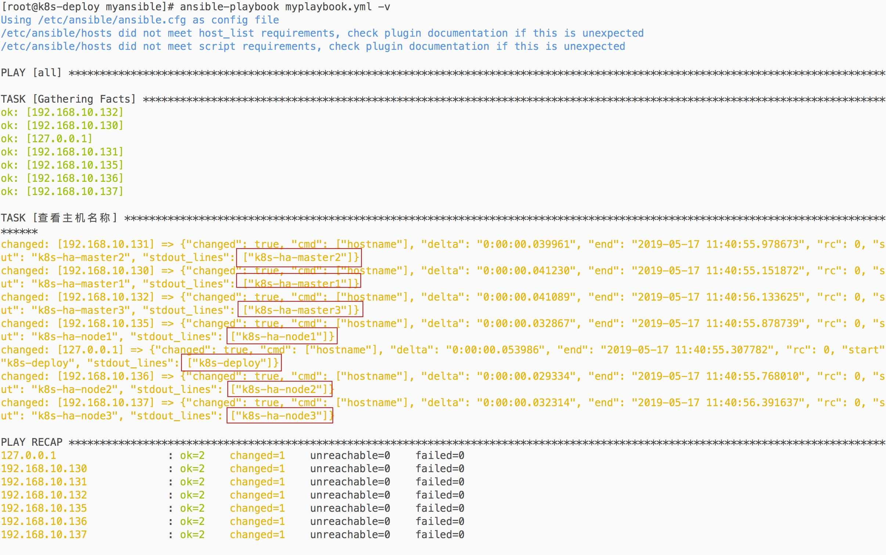

ansible作为目前批量linux机器远控工具的老大、其易用性、管理成本低等远远超过了同类的Fabric等工具。
准备测试机器，这里就拿已有的kubernetes的机器做测试，机器和ip分配参考：java微服务 k8s生产环境搭建, 注意下面案例中的k8s机器的ip段已经改成 192.168.10，机器列表如下
| 机器 | ip |
|---|---|
| K8s-ha-deploy | 192.168.10.140 |
| K8s-ha-master1 | 192.168.10.130 |
| K8s-ha-master2 | 192.168.10.131 |
| K8s-ha-master3 | 192.168.10.132 |
| K8s-ha-node1 | 192.168.10.135 |
| K8s-ha-node2 | 192.168.10.136 |
| K8s-ha-node3 | 192.168.10.137 |
安装ansible
执行下面的命令在部署机上安装ansible
pip install pip --upgrade -i http://mirrors.aliyun.com/pypi/simple/ --trusted-host mirrors.aliyun.com
pip install --no-cache-dir ansible -i http://mirrors.aliyun.com/pypi/simple/ --trusted-host mirrors.aliyun.com
也可以使用docker一键启动
alias ansible="docker run --rm --name ansible -v ${HOME}/.ssh/config:/home/ansible/.ssh/config:ro -v ${HOME}/.ssh/known_hosts:/home/ansible/.ssh/known_hosts:ro -it williamyeh/ansible:alpine3 ansible"
ansible --version
查看效果：
编写hosts文件把被操控机器ip列进去
ansible会从当前目录的hosts配置文件中读取被操控的机器的ip
把6台想要操控的机器ip写入hosts文件，如下
[kube-master]
192.168.10.130
192.168.10.131
192.168.10.132
[kube-node]
192.168.10.135
192.168.10.136
192.168.10.137
设置ssh免密登录
ansible所在的主机要求能够使用密钥登录所有被操控的机器，这样效率就很高了，无需输入密码的交互了
在ansible所在主机先使用下面的命令生成密钥
ssh-keygen -t rsa -b 2048
然后执行ssh-copy-id命令把密钥复制到所有需要被ansible操控的机器
ssh-copy-id 192.168.10.130
ssh-copy-id 192.168.10.131
ssh-copy-id 192.168.10.132
ssh-copy-id 192.168.10.135
ssh-copy-id 192.168.10.136
ssh-copy-id 192.168.10.137
ssh-copy-id 192.168.10.140
然后就可以使用ansible, ansible-playbook等命令操控机器了
使用ansible指令
查看配置的主机是否在线
ansible all -m ping
查看效果
可以看到配置的6台机器都是在线的
利用ansible执行任意指令
在远程机器上执行任意命令使用指令ansible all -m command -a '这里写需要执行的命令'
比如在远程机器上执行hostname获取机器名
ansible all -m command -a 'hostname'
查看执行效果：
这个ansible指令虽然方便但是每次只能执行一个指令，并且不能像文件那样对指令进行管理
下面使用ansible提供的playbook功能利用文件来组织管理这些需要在远程机器执行指令
palybook
playbook使用yml格式保存文件内容，yml格式参考：https://yaml.org/
把这个ansible指令ansible all -m command -a 'hostname'转成playbook如下
给这个playbook起个文件名比如：myplaybook.yml
- hosts: all
become: root
tasks:
- name: "查看主机名称"
command: hostname
然后使用命令ansible-playbook myplaybook.yml，但是ansible-playbook默认不会把这个hostname命令的直接输出的，这里要查看输出结果可以添加-v参数或者使用debug模块，命令如下
ansible-playbook myplaybook.yml -v
查看执行效果如下：

这样就可以在文件里长期对命令进行维护了
一些注意的点
ansible内置了很多模块替代编写原始shell命令来提高效率，所有可用的模块参考：Module Index
当被管理的playbook项目越来越大时，单靠playbook也会难以维护，这个时候就可以使用ansible提供的include和roles功能了
python的pip包可以使用阿里云的镜像，这样可以提高包的安装速度
这个ansible命令只能临时使用，对命令长期维护建议使用playbook